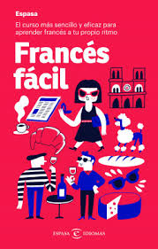
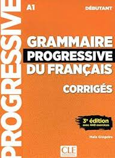
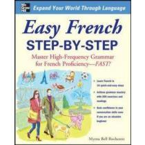
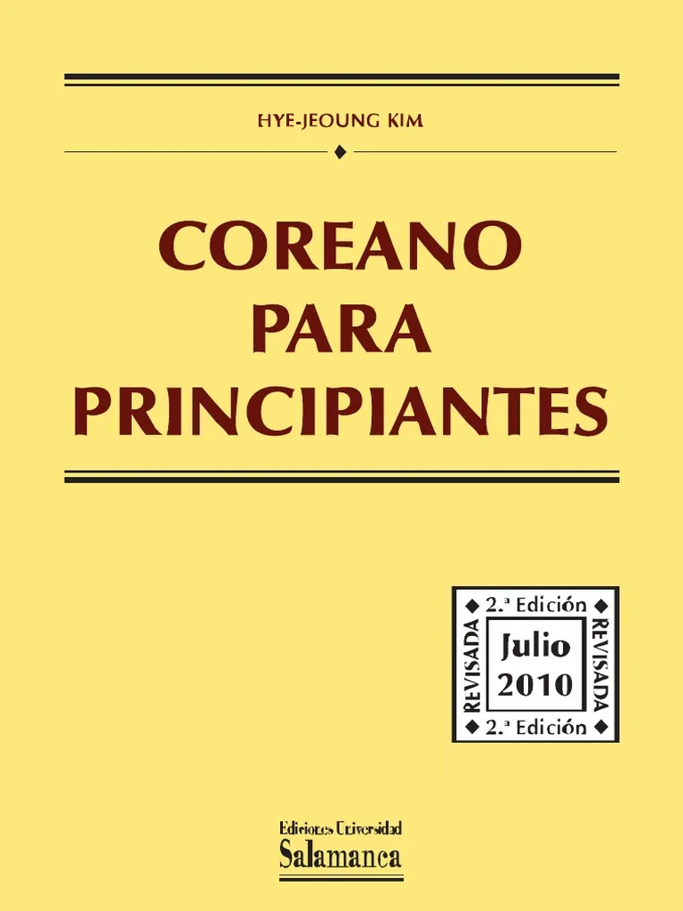

Entradas:
En este seccion les daremos resenas de los mejores (y populares) libros para aprender frances.
1. Francés facil
Es un libro bilingue, lo cual lo hace perfecto para aprender desde cero. Como el titulo lo dice, este libro simplifica el francés.
2. Grammaire Progressive du francais
Este es uno de los libros mas populares y recomendados para aprender frances pues está escrito para aprender francés en francés.
3. Easy French step-by-step
Ha diferencia de los otros libros ya mencionados, este libro se aprende francés desde el inglés, por lo cual se debe saber o al menos tener un concepto intermedio del inglés. Como el titulo dice, este libro va paso a paso, desde los artículos hasta el plus-que-parfait.
En este seccion les daremos resenas de los mejores (y populares) libros para aprender coreano.
1. Coreano para principiantes
Un libro muy completo. Comienza con el alfabeto coreano y luego sigue con la gramática y vocabulario más necesarios.
2. Coreano inicial
Es un libro gratuito y super interactivo que va desde lo más básico, como el hangeul, hasta formar oraciones más complicadas.

3. Talk to me in Korean
Una serie de libros para aprender coreano muy popular en comunidades poliglotas. Perfecto para personas que les gusta aprender mediante frases comunes y no tanta gramática.